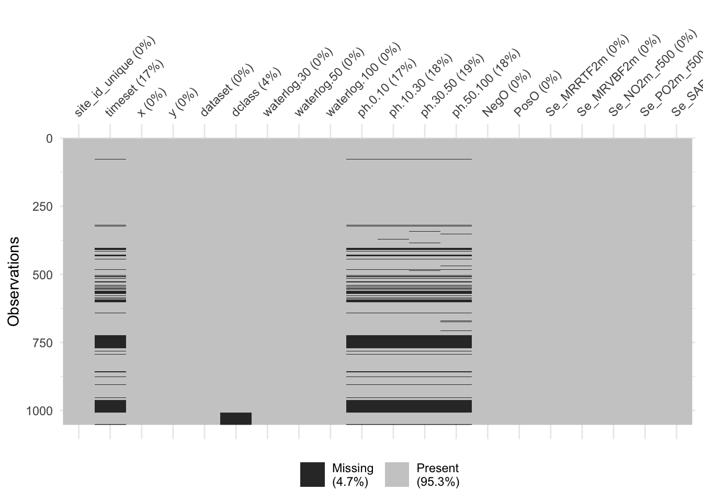

Soil samples of variables measured in the field. These observations need to be geo-located and are used as the target for the model that is then used for spatial upscaling.
Environmental covariates, provided as geospatial raster maps. These covariates act as predictors in the model that is used for spatial upscaling.
Let’s load them
2.1.1 Soil samples
Code
# Load soil data from sampling locationsdf_obs <- readr::read_csv( here::here("data-raw/soildata/berne_soil_sampling_locations.csv") )# Display datahead(df_obs) |> knitr::kable()
site_id_unique
timeset
x
y
dataset
dclass
waterlog.30
waterlog.50
waterlog.100
ph.0.10
ph.10.30
ph.30.50
ph.50.100
4_26-In-005
d1968_1974_ptf
2571994
1203001
validation
poor
0
0
1
6.071733
6.227780
7.109235
7.214589
4_26-In-006
d1974_1978
2572149
1202965
calibration
poor
0
1
1
6.900000
6.947128
7.203502
7.700000
4_26-In-012
d1974_1978
2572937
1203693
calibration
moderate
0
1
1
6.200000
6.147128
5.603502
5.904355
4_26-In-014
d1974_1978
2573374
1203710
validation
well
0
0
0
6.600000
6.754607
7.200000
7.151129
4_26-In-015
d1968_1974_ptf
2573553
1203935
validation
moderate
0
0
1
6.272715
6.272715
6.718392
7.269008
4_26-In-016
d1968_1974_ptf
2573310
1204328
calibration
poor
0
0
1
6.272715
6.160700
5.559031
5.161655
The dataset on soil samples from Bern holds 13 variables for 1052 entries (more information here):
site_id_unique: The location’s unique site id.
timeset: The sampling year and information on sampling type for soil pH (no label: CaCl\(_2\) laboratory measurement, field: indicator solution used in field, ptf: H\(_2\)O laboratory measurement transferred by pedotransfer function).
x: The x (easting) coordinates in meters following the (CH1903/LV03) system.
y: The y (northing) coordinates in meters following the (CH1903/LV03) system.
dataset: Specification whether a sample is used for model training ("calibration") or testing ("validation") (this is based on randomization to ensure even spatial coverage).
dclass: Soil drainage class
waterlog.30, waterlog.50, waterlog.100: Specification whether soil was water logged at 30, 50, or 100 cm depth (0 = No, 1 = Yes).
ph.0.10, ph.10.30, ph.30.50, ph.50.100: Average soil pH between 0-10, 10-30, 30-50, and 50-100 cm depth.
2.1.2 Environmental covariates
Now, let’s load the covariates that we want to produce our soil maps with. These files are in the geoTIFF format - geolocated TIFF files.
Code
# Get a list with the path to all raster fileslist_raster <-list.files( here::here("data-raw/geodata/covariates/"),full.names =TRUE )# Display data (lapply to clean names)lapply( list_raster, function(x) sub(".*/(.*)", "\\1", x) ) |>unlist() |>head(5) |>print()
The output above shows the first five raster files with rather cryptic names. The meaning of all 91 raster files are given in Chapter 6. Make sure to have a look at that list as it will help you to interpret your model results later on. Let’s look at one of these raster files, Se_slope2m.tif, to get a better understanding for our data. That file contains the local slope of the terrain, derived from a digital elevation model with 2 m resolution:
Code
# Load a raster file as example: Picking the slope profile at 2 m resolutionraster_example <- terra::rast( here::here("data-raw/geodata/covariates/Se_slope2m.tif") )raster_example
class : SpatRaster
dimensions : 986, 2428, 1 (nrow, ncol, nlyr)
resolution : 20, 20 (x, y)
extent : 2568140, 2616700, 1200740, 1220460 (xmin, xmax, ymin, ymax)
coord. ref. : CH1903+ / LV95
source : Se_slope2m.tif
name : Se_slope2m
min value : 0.00000
max value : 85.11286
As shown in the output, a raster object has the following properties (among others, see ?terra::rast):
class: The class of the file, here a SpatRaster.
dimensions: The number of rows, columns, years (if temporal encoding).
resolution: The resolution of the coordinate system, here it is 20 in both axes.
extent: The extent of the coordinate system defined by min and max values on the x and y axes.
coord. ref.: Reference coordinate system. Here, the raster is encoded using the LV95 geodetic reference system from which the projected coordinate system CH1903+ is derived.
source: The name of the source file.
names: The name of the raster file (mostly the file name without file-specific ending)
min value: The lowest value of all cells.
max value: The highest value of all cells.
Tip
The code chunks filtered for a random sub-sample of 15 variables. As described in Chapter 5, your task will be to investigate all covariates and find the ones that can best be used for your modelling task.
2.2 Visualise data
Now, let’s look at a visualisation of this raster file. Since we have selected the slope at 2 m resolution, we expect a relief-like map with a color gradient that indicates the steepness of the terrain. A quick way to look at a raster object is to use the generic plot() function.
Code
# Plot raster exampleterra::plot(raster_example)
To have more flexibility with visualising the data, we can use the ggplot() in combination with the {tidyterra} package.
Code
library(tidyterra)# To have some more flexibility, we can plot this in the ggplot-style as such:ggplot2::ggplot() + tidyterra::geom_spatraster(data = raster_example) + ggplot2::scale_fill_viridis_c(na.value =NA,option ="magma",name ="Slope (%) \n" ) + ggplot2::theme_bw() + ggplot2::scale_x_continuous(expand =c(0, 0)) +# avoid gap between plotting area and axis ggplot2::scale_y_continuous(expand =c(0, 0)) + ggplot2::labs(title ="Slope of the Study Area")
Tip
Note that the second plot has different coordinates than the upper one. That is because the data was automatically projected to the World Geodetic System (WGS84, ESPG: 4326).
This looks already interesting but we can put our data into a bit more context. For example, a larger map background would be useful to get a better orientation of our location. Also, it would be nice to see where our sampling locations are and to differentiate these locations by whether they are part of the training or testing dataset. Bringing this all together requires some more understanding of plotting maps in R. So, don’t worry if you do not understand everything in the code chunk below and enjoy the visualizations:
Code
# To get our map working correctly, we have to ensure that all the input data# is in the same coordinate system. Since our Bern data is in the Swiss # coordinate system, we have to transform the sampling locations to the # World Geodetic System first.# To look up EPSG Codes: https://epsg.io/# World Geodetic System 1984: 4326# Swiss CH1903+ / LV95: 2056# For the raster:rasta <- terra::project(raster_example, "+init=EPSG:4326")# Let's make a function for transforming the sampling locations:change_coords <-function(data, from_CRS, to_CRS) {# Check if data input is correctif (!all(names(data) %in%c("id", "lat", "lon"))) {stop("Input data needs variables: id, lat, lon") }# Create simple feature for old CRS sf_old_crs <- sf::st_as_sf(data, coords =c("lon", "lat"), crs = from_CRS)# Transform to new CRS sf_new_crs <- sf::st_transform(sf_old_crs, crs = to_CRS) sf_new_crs$lat <- sf::st_coordinates(sf_new_crs)[, "Y"] sf_new_crs$lon <- sf::st_coordinates(sf_new_crs)[, "X"] sf_new_crs <- sf_new_crs |> dplyr::as_tibble() |> dplyr::select(id, lat, lon)# Return new CRSreturn(sf_new_crs)}# Transform dataframescoord_train <- df_obs |> dplyr::filter(dataset =="calibration") |> dplyr::select(site_id_unique, x, y) |> dplyr::rename(id = site_id_unique, lon = x, lat = y) |>change_coords(from_CRS =2056, to_CRS =4326 )coord_test <- df_obs |> dplyr::filter(dataset =="validation") |> dplyr::select(site_id_unique, x, y) |> dplyr::rename(id = site_id_unique, lon = x, lat = y) |>change_coords(from_CRS =2056, to_CRS =4326 )
Code
# Notes: # - This code may only work when installing the development branch of {leaflet}:# remotes::install_github('rstudio/leaflet')# - You might have to do library(terra) for R to find functions needed in the backendlibrary(terra)# Let's get a nice color palette now for easy referencepal <- leaflet::colorNumeric("magma", terra::values(r),na.color ="transparent" )# Next, we build a leaflet mapleaflet::leaflet() |># As base maps, use two provided by ESRI leaflet::addProviderTiles(leaflet::providers$Esri.WorldImagery, group ="World Imagery") |> leaflet::addProviderTiles(leaflet::providers$Esri.WorldTopoMap, group ="World Topo") |># Add our raster file leaflet::addRasterImage( rasta,colors = pal,opacity =0.6,group ="raster" ) |># Add markers for sampling locations leaflet::addCircleMarkers(data = coord_train,lng =~lon, # Column name for x coordinateslat =~lat, # Column name for y coordinatesgroup ="training",color ="black" ) |> leaflet::addCircleMarkers(data = coord_test,lng =~lon, # Column name for x coordinateslat =~lat, # Column name for y coordinatesgroup ="validation",color ="red" ) |># Add some layout and legend leaflet::addLayersControl(baseGroups =c("World Imagery","World Topo"),position ="topleft",options = leaflet::layersControlOptions(collapsed =FALSE),overlayGroups =c("raster", "training", "validation") ) |> leaflet::addLegend(pal = pal,values = terra::values(r),title ="Slope (%)")
Note
This plotting example is based to the one shown in the AGDS 2 tutorial “Handful of Pixels” on phenology. More information on using spatial data in R can be found there in the Chapter on Geospatial data in R.
That looks great! At a first glance, it is a bit crowded but once you zoom in, you can investigate our study area quite nicely. You can check whether the slope raster file makes sense by comparing it against the base maps. Can you see how cliffs along the Aare river, hills, and even gravel quarries show high slope values. We also see that our testing dataset is randomly distributed across the area covered by the training dataset.
2.3 Combine data
Now that we have played with a few visualizations, let’s get back to preparing our data. The {terra} package comes with the very useful tool to stack multiple rasters on top of each other if they share the spatial grid (extent and resolution). To do so, we just have to feed in the vector of file names list_raster:
Code
# Load all files as one batchall_rasters <- terra::rast(list_raster)all_rasters
Note that above, we have stacked only a random of all available raster data (list_raster) which we have generated previously.
Now, we do not want to have the covariates’ data from all cells in the raster file. Rather, we want to reduce our stacked rasters to the x and y coordinates for which we have soil sampling data. We can do this using the terra::extract() function. Then, we want to merge the two dataframes of soil data and covariates data by their coordinates. Since number of rows and the order of the covariate data is the same as the “Bern data” (soil samples), we can simply bind their columns with cbind():
Code
# Extract coordinates from sampling locationssampling_xy <- df_obs |> dplyr::select(x, y)# From all rasters, extract values for sampling coordinatesdf_covars <- terra::extract( all_rasters, # The raster we want to extract from sampling_xy, # A matrix of x and y values to extract forID =FALSE# To not add a default ID column to the output )df_full <-cbind(df_obs, df_covars)head(df_full) |> knitr::kable()
site_id_unique
timeset
x
y
dataset
dclass
waterlog.30
waterlog.50
waterlog.100
ph.0.10
ph.10.30
ph.30.50
ph.50.100
NegO
PosO
Se_MRRTF2m
Se_MRVBF2m
Se_NO2m_r500
Se_PO2m_r500
Se_SAR2m
Se_SCA2m
Se_TWI2m
Se_TWI2m_s15
Se_TWI2m_s60
Se_alti2m_std_50c
Se_conv2m
Se_curv25m
Se_curv2m
Se_curv2m_fmean_50c
Se_curv2m_fmean_5c
Se_curv2m_s60
Se_curv2m_std_50c
Se_curv2m_std_5c
Se_curv50m
Se_curv6m
Se_curvplan25m
Se_curvplan2m
Se_curvplan2m_fmean_50c
Se_curvplan2m_fmean_5c
Se_curvplan2m_s60
Se_curvplan2m_s7
Se_curvplan2m_std_50c
Se_curvplan2m_std_5c
Se_curvplan50m
Se_curvprof25m
Se_curvprof2m
Se_curvprof2m_fmean_50c
Se_curvprof2m_fmean_5c
Se_curvprof2m_s60
Se_curvprof2m_s7
Se_curvprof2m_std_50c
Se_curvprof2m_std_5c
Se_curvprof50m
Se_diss2m_50c
Se_diss2m_5c
Se_e_aspect25m
Se_e_aspect2m
Se_e_aspect2m_5c
Se_e_aspect50m
Se_n_aspect2m
Se_n_aspect2m_50c
Se_n_aspect2m_5c
Se_n_aspect50m
Se_n_aspect6m
Se_rough2m_10c
Se_rough2m_5c
Se_rough2m_rect3c
Se_slope2m
Se_slope2m_fmean_50c
Se_slope2m_fmean_5c
Se_slope2m_s60
Se_slope2m_s7
Se_slope2m_std_50c
Se_slope2m_std_5c
Se_slope50m
Se_slope6m
Se_toposcale2m_r3_r50_i10s
Se_tpi_2m_50c
Se_tpi_2m_5c
Se_tri2m_altern_3c
Se_tsc10_2m
Se_vrm2m
Se_vrm2m_r10c
be_gwn25_hdist
be_gwn25_vdist
cindx10_25
cindx50_25
geo500h1id
geo500h3id
lgm
lsf
mrrtf25
mrvbf25
mt_gh_y
mt_rr_y
mt_td_y
mt_tt_y
mt_ttvar
protindx
terrTextur
tsc25_18
tsc25_40
vdcn25
vszone
4_26-In-005
d1968_1974_ptf
2571994
1203001
validation
poor
0
0
1
6.071733
6.227780
7.109235
7.214589
1.569110
1.534734
5.930607
6.950892
1.562085
1.548762
4.000910
16.248077
0.0011592
0.0032796
0.0049392
0.3480562
-40.5395088
-0.0014441
-1.9364884
-0.0062570
0.0175912
0.0002296
2.9204133
1.1769447
0.0031319
-0.5886537
-0.0042508
-1.0857303
-0.0445323
-0.0481024
-0.0504083
-0.1655090
1.5687343
0.6229440
0.0007920
-0.0028067
0.8507581
-0.0382753
-0.0656936
-0.0506380
-0.0732220
1.6507173
0.7082230
-0.0023399
0.3934371
0.1770810
-0.9702092
-0.5661940
-0.7929600
-0.9939429
-0.2402939
-0.2840056
-0.6084610
-0.0577110
-0.7661251
0.3228087
0.2241062
0.2003846
1.1250136
0.9428899
0.6683306
0.9333237
0.7310556
0.8815832
0.3113754
0.3783818
0.5250366
0
-0.0940372
-0.0583917
10.319408
0.4645128
0.0002450
0.000125
234.39087
1.2986320
-10.62191
-6.9658718
6
0
7
0.0770846
0.0184651
4.977099
1316.922
9931.120
58
98
183
0.0159717
0.6248673
0.3332805
1.784737
65.62196
6
4_26-In-006
d1974_1978
2572149
1202965
calibration
poor
0
1
1
6.900000
6.947128
7.203502
7.700000
1.568917
1.533827
5.984921
6.984581
1.543384
1.558683
4.001326
3.357315
0.0139006
0.0070509
0.0067992
0.1484705
19.0945148
-0.0190294
2.1377332
0.0021045
0.0221433
0.0000390
3.8783867
4.3162045
-0.0171786
0.1278165
-0.0119618
-0.3522736
-0.0501855
-0.3270764
-0.1004921
-0.5133076
2.0736780
2.2502327
-0.0073879
0.0070676
-2.4900069
-0.0522900
-0.3492197
-0.1005311
-0.4981292
2.1899190
2.4300070
0.0097907
0.4014700
0.7360508
0.5683194
-0.3505180
0.8753148
0.3406741
0.4917848
-0.5732749
0.4801802
-0.4550385
0.7722272
0.2730940
0.2489859
0.2376962
1.3587183
1.0895698
0.9857153
1.0231543
1.0398037
1.0152543
0.5357812
0.0645478
0.5793087
0
-0.0014692
0.0180000
12.603136
0.5536283
0.0005389
0.000300
127.41681
1.7064546
-10.87862
-11.8201790
6
0
7
0.0860347
0.0544361
4.975796
1317.000
9931.672
58
98
183
0.0204794
0.7573612
0.3395441
1.832904
69.16074
6
4_26-In-012
d1974_1978
2572937
1203693
calibration
moderate
0
1
1
6.200000
6.147128
5.603502
5.904355
1.569093
1.543057
5.953919
6.990917
1.565405
1.563151
4.000320
11.330072
0.0011398
0.0021498
0.0017847
0.1112066
-9.1396294
0.0039732
-0.4178924
0.0009509
0.0431735
0.0034232
0.7022317
0.4170935
-0.0026431
-0.0183221
0.0015183
-0.2168447
-0.0079620
0.0053904
-0.0091239
-0.0110896
0.3974485
0.2292406
-0.0013561
-0.0024548
0.2010477
-0.0089129
-0.0377831
-0.0125471
-0.0052359
0.4158890
0.2700820
0.0012870
0.6717541
0.4404107
-0.6987815
-0.1960597
-0.3866692
-0.7592779
-0.9633239
-0.3006475
-0.9221049
-0.3257418
-0.9502072
0.2305476
0.2182523
0.1434273
0.7160403
0.5758902
0.5300468
0.5107915
0.5744110
0.4975456
0.2001768
0.1311051
0.4620202
0
0.0340407
-0.0145804
7.100000
0.4850160
0.0000124
0.000000
143.41533
0.9372618
22.10210
0.2093917
6
0
7
0.0737963
3.6830916
4.986864
1315.134
9935.438
58
98
183
0.0048880
0.7978453
0.4455501
1.981526
63.57096
6
4_26-In-014
d1974_1978
2573374
1203710
validation
well
0
0
0
6.600000
6.754607
7.200000
7.151129
1.569213
1.542792
4.856076
6.964162
1.562499
1.562670
4.000438
42.167496
0.0000000
0.0008454
0.0021042
0.3710849
-0.9318936
-0.0371234
-0.0289909
0.0029348
-0.1056513
0.0127788
1.5150748
0.2413423
0.0020990
-0.0706228
-0.0113604
-0.0272214
-0.0301961
-0.0346193
-0.0273140
-0.0343277
0.8245047
0.1029889
-0.0041158
0.0257630
0.0017695
-0.0331309
0.0710320
-0.0400928
0.0529446
0.8635767
0.1616543
-0.0062147
0.4988544
0.4217250
-0.8485889
-0.8836724
-0.8657616
-0.8993938
-0.4677161
-0.5735765
-0.4998477
-0.4121092
-0.4782534
0.3859352
0.2732429
0.1554769
0.8482135
0.8873205
0.8635756
0.9015982
0.8518201
0.5767300
0.2149791
0.3928713
0.8432562
0
0.0686932
-0.0085602
8.303085
0.3951114
0.0000857
0.000100
165.80418
0.7653937
-20.11569
-7.7729993
6
0
7
0.0859686
0.0075817
5.285522
1315.160
9939.923
58
98
183
0.0064054
0.4829135
0.4483251
2.113142
64.60535
6
4_26-In-015
d1968_1974_ptf
2573553
1203935
validation
moderate
0
0
1
6.272715
6.272715
6.718392
7.269008
1.570359
1.541979
4.130917
6.945287
1.550528
1.562685
4.000948
5.479310
0.0054557
0.0043268
0.0045225
0.3907509
4.2692256
0.0378648
0.6409346
0.0022611
-0.1020419
0.0161510
3.6032522
1.8169731
0.0346340
0.0476020
0.0378154
0.2968794
-0.0179657
-0.0137853
-0.0146946
0.0060875
1.4667766
0.9816071
0.0337645
-0.0000494
-0.3440553
-0.0202268
0.0882566
-0.0308456
0.0929077
2.6904552
1.0218329
-0.0008695
0.6999696
0.3944107
-0.8918364
-0.7795515
-0.8864348
-0.4249992
0.5919228
0.4304937
0.4614536
0.6559467
0.4574654
0.4330348
0.3299487
0.1889674
1.2301254
1.8937486
1.2098556
1.5986075
1.2745584
2.7759163
0.5375320
0.3582314
1.1426100
0
0.3005829
0.0061576
10.110727
0.5134069
0.0002062
0.000200
61.39244
1.0676192
-55.12566
-14.0670462
6
0
7
0.0650000
0.0007469
5.894688
1315.056
9942.032
58
98
183
0.0042235
0.6290755
0.3974232
2.080674
61.16533
6
4_26-In-016
d1968_1974_ptf
2573310
1204328
calibration
poor
0
0
1
6.272715
6.160700
5.559031
5.161655
1.569434
1.541606
2.030315
6.990967
1.563066
1.552568
4.000725
13.499996
0.0000000
0.0001476
0.0003817
0.1931891
-0.1732794
-0.1602274
0.0318570
-0.0035833
-0.1282881
0.0003549
1.5897882
0.8171870
-0.0123340
0.0400775
-0.0813964
0.0100844
-0.0049875
0.0320331
-0.0049053
0.0374298
0.7912259
0.3455668
-0.0059622
0.0788309
-0.0217726
-0.0014042
0.1603212
-0.0052602
0.0867119
1.0207798
0.6147888
0.0063718
0.3157751
0.5292308
-0.8766075
0.8129975
0.5905659
0.1640853
0.5820994
0.6325440
0.8054439
0.7448481
0.6081498
0.3688371
0.2607146
0.1763995
1.0906221
1.0418727
0.8515157
1.2106605
0.8916541
1.2163279
0.4894866
0.2049688
0.7156029
0
-0.0910767
0.0034276
9.574804
0.3864355
0.0001151
0.000525
310.05014
0.1321367
-17.16055
-28.0693741
6
0
7
0.0731646
0.0128017
5.938320
1315.000
9940.597
58
98
183
0.0040683
0.6997021
0.4278295
2.041467
55.78354
6
2.4 More data wrangling
Now, not all our covariates may be continuous variables and therefore have to be encoded as factors. As an easy check, we can take the original corvariates data and check for the number of unique values in each raster. If the variable is continuous, we expect that there are a lot of different values - at maximum 1052 different values because we have that many entries. So, let’s have a look and assume that variables with 10 or less different values are categorical variables.
Code
vars_categorical <- df_covars |># Get number of distinct values per variable dplyr::summarise(dplyr::across(dplyr::everything(), ~dplyr::n_distinct(.))) |># Turn df into long format for easy filtering tidyr::pivot_longer( dplyr::everything(), names_to ="variable", values_to ="n" ) |># Filter out variables with 10 or less distinct values dplyr::filter(n <=10) |># Extract the names of these variables dplyr::pull('variable')cat("Variables with less than 10 distinct values:", ifelse(length(vars_categorical) ==0, "none", vars_categorical))
Variables with less than 10 distinct values: geo500h1id
Now that we have the names of the categorical values, we can mutate these columns in our data frame using the base function as.factor():
We are almost done with our data preparation, we just need to reduce it to sampling locations for which we have a decent amount of data on the covariates. Else, we blow up the model calibration with data that is not informative enough.
Code
# Get number of rows to calculate percentagesn_rows <-nrow(df_full)# Get number of distinct values per variabledf_full |> dplyr::summarise(dplyr::across(dplyr::everything(), ~length(.) -sum(is.na(.)))) |> tidyr::pivot_longer(dplyr::everything(), names_to ="variable", values_to ="n") |> dplyr::mutate(perc_available =round(n / n_rows *100)) |> dplyr::arrange(perc_available) |>head(10) |> knitr::kable()
variable
n
perc_available
ph.30.50
856
81
ph.10.30
866
82
ph.50.100
859
82
timeset
871
83
ph.0.10
870
83
dclass
1006
96
site_id_unique
1052
100
x
1052
100
y
1052
100
dataset
1052
100
This looks good, we have no variable with a substantial amount of missing data. Generally, only pH measurements are lacking, which we should keep in mind when making predictions and inferences. Another great way to explore your data, is using the {visdat} package:
Code
df_full |> dplyr::select(1:20) |># reduce data for readability of the plot visdat::vis_miss()

Alright, we see that we are not missing any data in the covariate data. Mostly sampled data, specifically pH and timeset data is missing. We also see that this missing data is mostly from the same entries, so if we keep only entries where we have pH data - which is what we are interested in here - we have a dataset with pracitally no missing data.
2.6 Save data
Code
if (!dir.exists(here::here("data"))) system(paste0("mkdir ", here::here("data")))saveRDS(df_full, here::here("data/df_full.rds"))